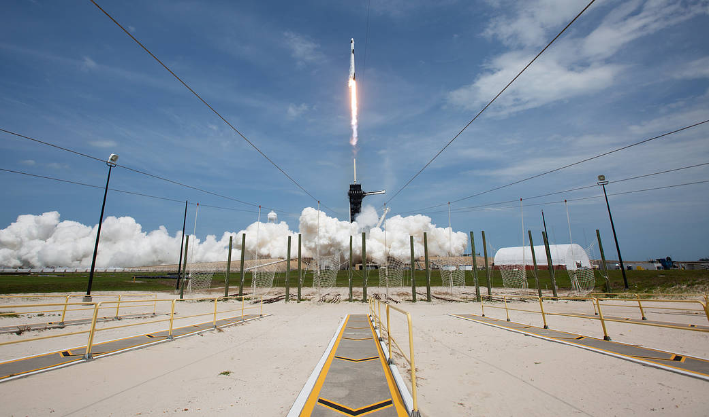
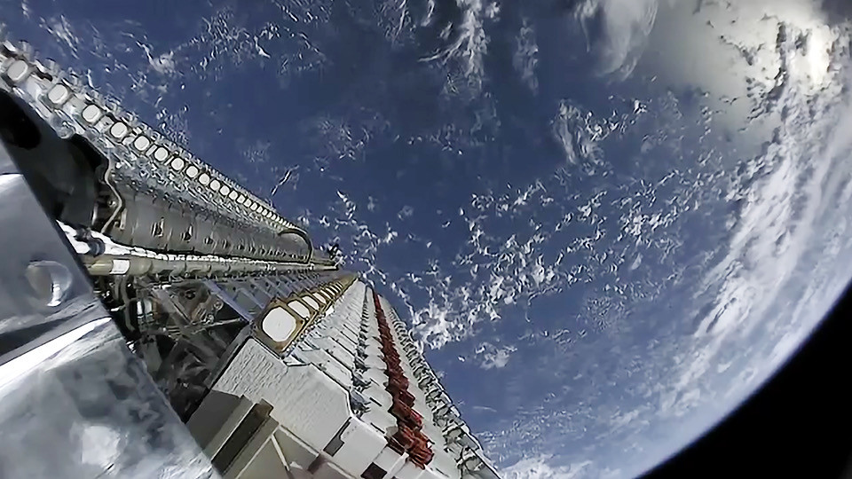
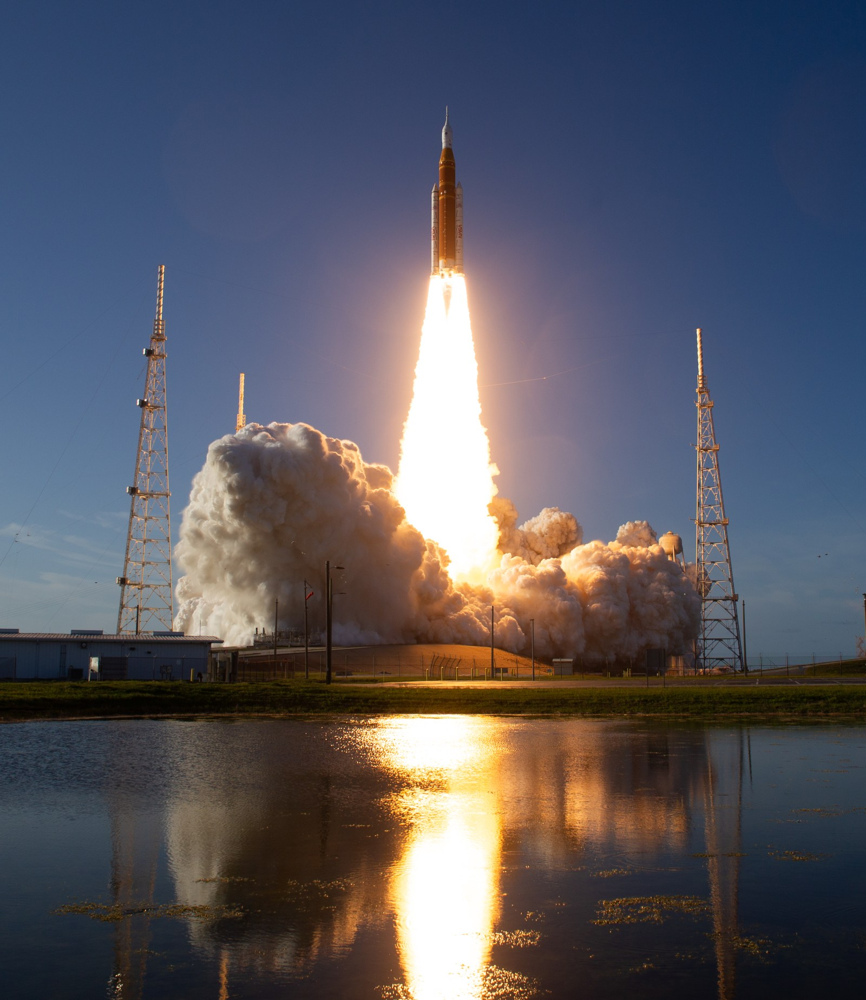
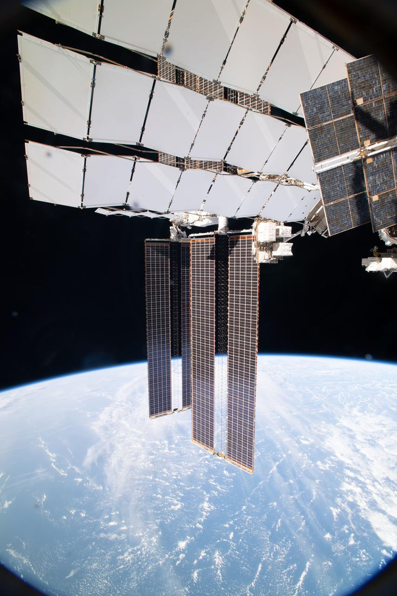

Monografia · Dodici capitoli · Edizione 9 ottobre 2026Crew Dragon: costruire la fiducia, portare le persone nello spazio
Contratti Commercial Crew, progetto della capsula, sviluppo, ritardi, Demo-1, incidente del 2019, prova di fuga, Demo-2, servizio NASA e missioni private. Fotografie documentarie, diagrammi, video e registro consultabile dei voli.
Apri il libro 
Monografia · Ventidue capitoli · Edizione 10 ottobre 2026Starlink: costruire una rete, cambiare il cielo
Dal concetto alla crisi iniziale e alla riorganizzazione, dai primi lanci ai terminali, ai laser e a Direct to Cell. V3 e Starship, confronto con OneWeb, concorrenza e megacostellazioni: orbita, astronomia, atmosfera e responsabilità pubbliche. Fotografie con licenze, schemi originali, video, calcolatori e cronologia consultabile.
Apri il libro 
Monografia · Ventiquattro capitoli · Edizione 10 ottobre 2026Starship: storia di un’idea, costruzione di un sistema
Marte, Red Dragon, ITS e BFR, acciaio, Raptor, Starbase e la scuola dei prototipi. I voli integrati fino alla prima orbita, il riuso, il rifornimento, HLS e le difficoltà di una presenza marziana. Schemi dei motori, mappa interattiva, grafici, fotografie con licenze e registro dei voli.
Apri il libro 
Monografia · Ventidue capitoli · Edizione 10 ottobre 2026Artemis: tornare sulla Luna, costruire una presenza
Origini, SLS e Orion, Artemis I e II, nuova architettura delle missioni, Starship HLS e Blue Moon. Rifornimento, Gateway, polo sud, tute, scienza, partner e base lunare: fotografie NASA, schemi originali, video e cronologia consultabile.
Apri il libro 
Monografia · Ventiquattro capitoli · Edizione 10 ottobre 2026Starmind: portare il calcolo nello spazio
La nascita del programma, AI1 e Vera Rubin, orbite ed energia solare, radiatori e laser, radiazioni e prove. Gigasat, Starship, economia, concorrenti, sicurezza, astronomia e atmosfera: 17 fotografie documentarie, 24 schemi originali, due laboratori interattivi e cronologia consultabile.
Apri il libro